Dornier Do-217 M-11
Pro-Modeler kit converted with Koster Aero Enterprise package
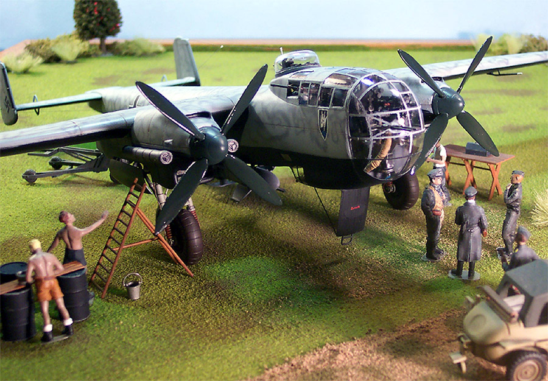
Images, model and text Copyright � 2004 by Matt Swan
Developmental Background
The background of Claudius Dornier�s 17 and 217 series of aircraft has been extensively covered in three previous kit reviews within this website so rather than repeat that information here you can review it through these links; Do-217 E-5 from Pro-Modeler, Do-217 N-1/J from MPM and the Koster Aero Enterprise Do-217 K-2/M-11 conversion kit.
Construction
For some time now I have had the Pro-Modeler 1/48 Do-217 E-5 sitting in the stash and have to admit that it is a very attractive aircraft. Not so long ago I had the opportunity to pick up Bill Koster�s Do-217 K-2/M-11 conversion for the kit and this is even more attractive. Something about that bulbous glazed nose really appeals to me. After many weeks of contemplating the situation at last I have made the first cut, the nose of the Pro-Modeler kit has been sawn off and sanded smooth. It was this act that really committed me to the build after so many sessions of just looking over trees of parts then putting it back in the closet. The new Koster nose is made from a heavy Copolyester material also called Vivac and is cut from the master sheet with a Dremel and a cut-off wheel. I have carefully sanded the edges to conform to the Pro-Modeler piece. I am careful not to sand the center seam all the way down yet rather waiting until the main pieces can be dry fit just so I do not take too much plastic off.
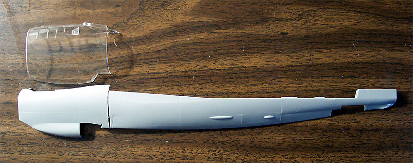
This has got me started on the build but what I really want to work on is the cockpit. This is a combination of Pro-Modeler parts and Koster parts. The left sidewall is the original kit part while the right sidewall is from Koster as are the floor pan and forward bulkhead.
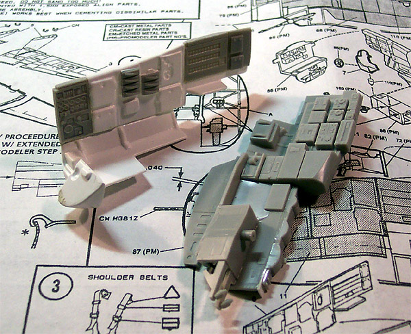
I was not especially thrilled with the detail on the Koster sidewall so sliced it apart and reconstructed it using some panels from the original Pro-Modeler right sidewall. The throttle quadrant was cut apart on the left. The Koster instructions call for a single piece of flat scrap to be placed here with the PE throttles glued onto it. I decided to cut apart the original throttle quadrant and install pieces of it here along with some sheet stock and some putty to build (in my humble opinion) a much better looking throttle quadrant. The picture to the left shows some of this surgery that I�ve performed. Note the putty on the most forward tip of the forward bulkhead; this piece was so thin from the vacuform process that I could actually see through it. I filled the interior with some putty and reformed the exterior as well. I also glued a piece of flat stock across the backside of this piece to close it off because I will have the lower access hatch open and don�t want an open hole visible there.
From here I glued the PE throttles in place but managed to lose one of the larger pieces to the carpet monster and ended up using the kit throttles in its place. All other levers are PE. The pilot�s seat and the radio operators seat were mounted on toothpicks to be finished separately from the other parts. All these pieces are airbrushed with Gunze-Sangyo RLM 66 Black Gray. Seatbelts are manufactured from wine bottle foil with the Koster PE buckles. On the pilot�s seat I bored slots through the armor plate with the tip of my Xacto knife heated over a candle flame and inserted the top ends of the belts through here. The support frame for the radio operator�s seat had to be lengthened slightly with some stock plastic rod to reach the opposite sidewall properly. I had to add some strips of flat stock to the backside of the right sidewall to fill a gap there. All panels were painted flat black and dry brushed with white. Some details were picked out with red and yellow enamels then the primary pieces were sludge washed. After this had dried I dry brushed some areas with steel then assembled the main sections of the cockpit. As I did this I test fit the parts several times with the clear nose halves and with the fuselage end piece. I had to use more strips of flat stock and putty to close up the left sidewall area forward of the throttle quadrant to give it a more finished look that would be visible through the nose glazing when completed.
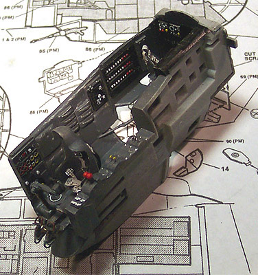
In the pictures above you can also see the PE rudder peddles from Koster. I added some cable to the bottoms of those from magnet wire. The right hand shot gives you a decent view of the backside of the surgically altered right sidewall also. When I went to install the control column I found this piece to be missing from the Koster set but was able to convert a spare column left over from a He-111B conversion project. The pit on this build took about four or five evenings of modeling to complete.
During the construction of the cockpit assembly whenever I had to wait for paint to dry I spent that time working on the main fuselage components. Here I am working with the Pro-Modeler pieces. We have three large pieces that consist of a left, a right and a top section. The top includes about one third of the upper wing panel. These three pieces were assembled and the seams were cleaned up, the tail cone is added and the lower elevator pieces are glued on. I also cut the replacement vacuformed upper and lower wing panels from the Koster parts and sanded them to the proper thinness. In the picture below we have the main fuselage with the lower wing panels taped in place and the cockpit resting in place. To your left is a Hobbycraft 1/48 Avia S-199 (same size as a Me-109) and on your right is an ICM 1/48 Yak 7B. I think this gives you a pretty good idea of the overall size of this aircraft.
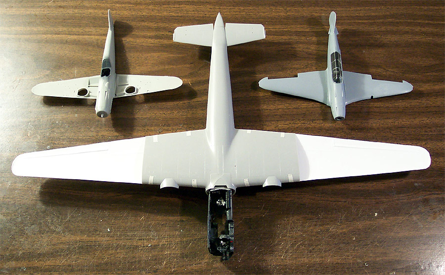
Next I think I�ll work on the landing gear bays. Like the fuselage pieces these are all Pro-Modeler pieces but the assemblies will mate to the new Koster wing panels. I cut the front half of each nacelle piece off in preparation for the new engine nacelles then assembled the remaining pieces per the kit instructions.
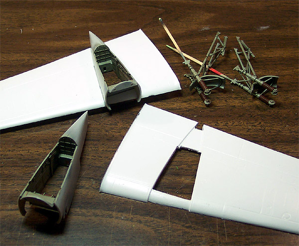
I also put together the gear strut assemblies. These and the gear bays were painted with Gunze-Sangyo RLM 02. While this dried I moved to the lower wing panels and cut out the center sections to allow the bays to slip in. Several times during this I had to test fit the bays then open the holes a little further with a diamond needle file.
Once the RLM 02 had dried enough to continue painting I added some brown paint on the brake lines and some brass details. A few items were done with some steel and the strut boots were painted with some Testors Rust to look like leather. I was not real thrilled with the look of the kit brake lines at this point and had been watching the movie "Battle of Britian" where there is an excellent shot of the brake lines on a row of He-111s. With this picture in my mind I went ahead and fashioned new brake lines from medium magnet wire and attached them with dabs of super-glue and strips of masking tape as hold down straps. Additional details on the inside surface of the Pro-Modeler wing panel were painted to match the bay details. All assemblies were washed with a basic sludge wash and the gear assemblies were put aside. The bays were installed into the wing panels and secured with some Tenax 7R. Note the use of toothpicks as painting handles. This really makes life a lot easier. Sometimes you have to get a little creative when finding a place to attach the toothpick but it is worth the effort.
I want to build this in a configuration that will have the Fritz-X bomb mounted under the fuselage rather than under a wing so I must replace the center section of the bomb bay area. In the following series of pictures you can see the first cuts with a Dremel. I used a cut-off wheel to make the initial cuts then started cleaning the opening up with a flat diamond needle file. In the middle picture the opening is mostly cleaned up and ready for the new panel. I test fit the replacement panel several times until the opening was large enough and in the third picture you can see it resting in place. Now for a little glue and some putty. Whenever I am using Squadron White putty I always have a bottle of acetone based fingernail polish remover at hand with some cotton swabs to help clean up excess putty and smooth out the work. I don�t know how many times I�ve talked about this but it really makes the job so much easier and helps to prevent destruction of other surface detail because there is not much sanding involved.
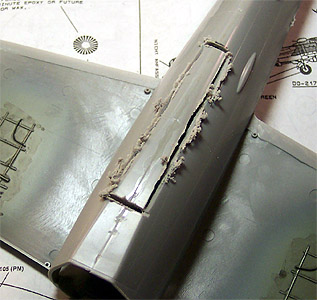
 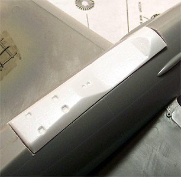
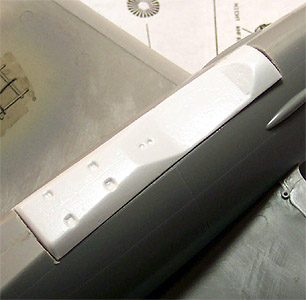
Charging ahead I can now assemble the wing panels. I started with the lower panel making sure to line the panel lines up with the Pro-Modeler parts then slowly working around the edges with some Tenax 7R and pinching the seams together. Once the lower panels were in place the upper panels were placed. I had to do a little trim work on the butt end to get a good fit but ultimately the wings were together and looking good.
So here is the progress picture so far, the landing gear bays are in place, the wing panels have been glued in place but still need some sanding along the leading edges and the replacement fuselage panel has been put in place, puttied and sanded.
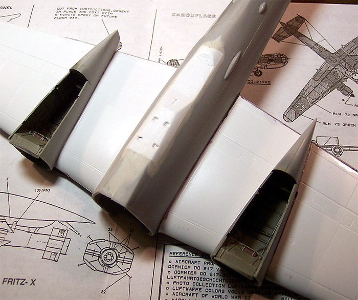
I kind of feel like taking a little diversion now. I think I�ll build me a Fritz-X bomb! Bill Koster really put some time into designing this little beast. We have a single resin piece for the rocket tubes in the tail and twenty-six individual vacuformed pieces for the rest of the bomb. I spent about four hours working this over with a couple of razor knives, a Dremel with a little burr bit, several different diamond needle files and a sheet of sandpaper. Once the bomb was together I drilled out one of the positions where ultimately a pair of control cables will connect to the mother aircraft and inserted a toothpick into one as a paint handle. In the picture to the far right I have placed a 1/48-scale figure from a Preiser Allied Air Crew kit as a size reference.
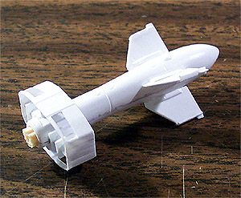 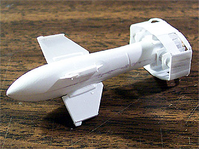 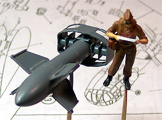
The whole process of assembling the wing panels and fuselage drew me right into working on the engine nacelles. I�ve now cut both sets out of the master vacuform parts sheet and trimmed them up. I also added a few alignment tabs to the inside of the engine nacelle face on the wing to help line the two assemblies up. As I work with this engine set I test fit pieces over and over again to each other and to the wing. I paint the interior of the engine nacelle and the face of the wing nacelle flat black then glue together the front pieces. This will not be glued to the wing until both engines are assembled and ready so that everything can be aligned nicely. Inside the engine I have placed a scratch build radiator baffle and installed the PE radiator grill. Over the grill I placed another piece of scrap plastic to block off the view into the empty engine compartment. In the picture below left you can see the tabs, which I highlighted with a black marker. I need several of them to help maintain the correct shape of all the pieces going together.
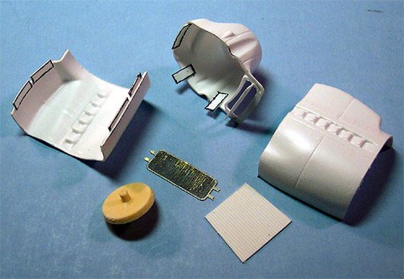 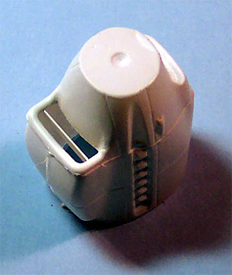
Once both nacelles were constructed and the glue had dried completely I puttied and sanded the seams. Once again I was cutting alignment tabs from scrap plastic to mount the engines to the wings. Once the basic nacelle was on the wing I applied plenty of putty to blend them in and smoothed it out with some acetone based fingernail polish remover. This was sanded smooth with progressively finer grades of sandpaper.
The white metal night exhaust manifolds needed to have the mold separation seams scraped off and mounting holes drilled. PE inserts were placed into the front ends of the manifolds and secured with some thin superglue then the manifolds were attached with a liberal amount of gap filling superglue and some accelerator. Note the PE parts in the picture below right. The resin supercharger intakes were cleaned up and attached next. The spinner back-plates are simply pressed into place at this time.
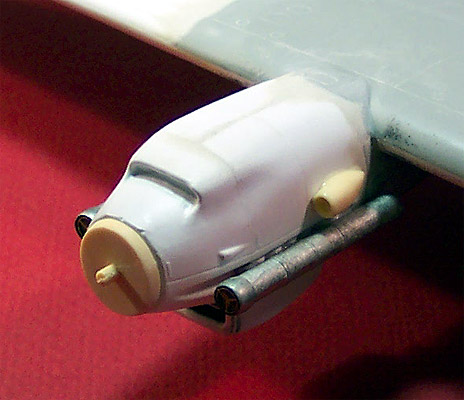 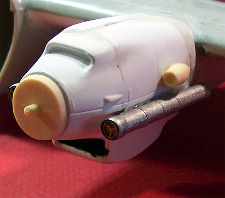
All of this sounds easy enough but there was about five days of modeling time involved in the engine nacelle assembly and attachment. Now that the engines are attached I can work on attaching the nose module. The interior section is dry fitted along with the exterior side panels then the interior section is glued to the main fuselage. Several heavy pieces of plastic stock are glued around it to form the basis for alignment tabs and to help support the interior piece in place. In the picture below left the blue arrow indicates one of these alignment tabs. Because the vacuformed clear exterior piece is thinner than the kit fuselage wall that I need to mate to I add several thin strips of plastic on top of the large tabs to bring the outer surfaces to the same level. This also required a bit of sanding and filing until the exterior panels test fit properly.
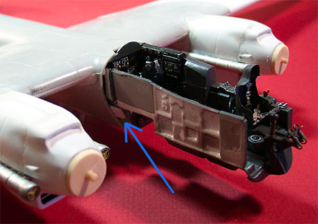 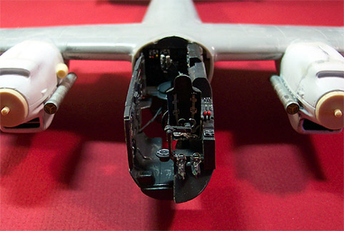
Attaching the clear nose panels is probably the trickiest part of this conversion. Before assembly I had dipped all three pieces in Future and let them cure overnight. This will help prevent fogging from superglue fumes and help with general clarity. I also spent an evening of my modeling time masking all the little windows on these pieces and drilling out the holes for the side mounted machine guns. Starting on the bottom of the fuselage I align the left side panel with the center seam of the fuselage and begin the attachment process with Tenax 7R. I hold the bottom section in place until the glue is strong enough to hold itself and let that dry before continuing around to the topside. While this dries I work on a few more interior details like the overhead instrument consol, the inner bulkhead that holds the ammo canisters and the upper gun turret ring. This is allowed to dry overnight and then the remaining interior components are installed on the left sidewall and the right side is attached. After yet another evening of drying time and I can work on lining up the front section of the sidewalls.
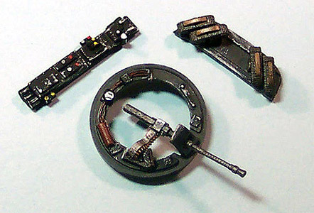 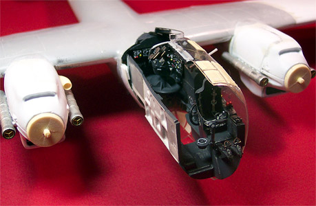
The two side panels were glued together using very small amounts of Tenax 7R and small dabs of superglue. In the lower areas I was able to install a few small alignment tabs and prepainted them RLM-66 to blend in a bit.

When I cut the side panels from the master sheet of parts I intentionally left excess plastic around the area that the upper gun turret mounts to. Now I can deal with this. Using my trusty Dremel with a large cut-off wheel mounted to it, at low speed I hold it over the gun position with the center of the mandrel centered in the turret hole and carefully grind the rim down. This gives me a very even surface all the way around and the gun ring slips into place perfectly. So far I have two, almost three days involved in mounting the nose module.
All this gets set aside and I can now work on the interior components for the nose cone section and masking the cone. I spent almost an entire day applying masking tape strips to the nose cone section before it was ready. There are four different instrument panels that need to be painted and decaled. One is a side panel mounting on the fuselage wall next to the pilot, another mounts at the end on the left side instrument panel that is already in place and the other two attach to the inside of the nose cone. I also have to construct a gun position for the nose cone and scratch build a spent shell chute for the gun.
So far this is how she looks before the final nose cone goes on and the last exterior details get added before painting.
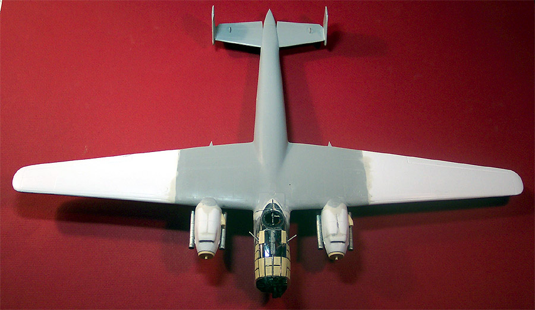
Moving right along the last remaining instrument panels are installed in the cockpit with fine dabs of gap filling superglue and accelerator. This is where that pretreatment of Future comes in really handy. Using two of the cast metal machine guns that came in the Koster kit I clean them up and glue them together to make the twin nose gun unit.
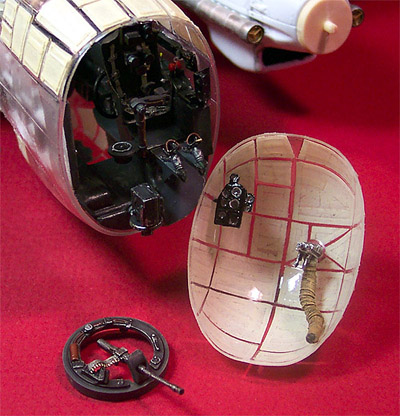
With my Welders Tip Drill I drilled two holes into the gun mounting area and test fit the guns in position. The guns were painted with Gunze-Sangyo Burnt Iron and dry brushed with silver. To fashion a spent shell chute I took a piece of plastic sprue and mounted it in my Dremel and used the Dremel like a lathe to spin the plastic part. With some sandpaper I smoothed the sprue piece out then used the edge of a triangular diamond needle file to make little grooves along the length of the sprue piece. Once this was accomplished I held the part over a candle to soften the plastic then bent it to shape to not only meet the gun but to clear the bomb sight. This process took several dry fit sessions and three heat treatments before everything fit together well. The shell chute was painted with Tamiya Desert Yellow and washed with a black sludge wash. The heating process followed by bending caused the groves to compress and stretch in places to create a very realistic canvas effect.
With a bead of Testors Clear Parts Cement the nose cone glazing gets attached to the rest of the model. I give this a few hours to set up then airbrushed the nose area with some RLM-66 to give the clear parts an interior color. This also brings to light a slight step at the bottom of the nose between the forward glazing piece and the rest of the model. This is quickly rectified with a fine sanding drum on my Dremel followed with some very fine grit sandpaper and another coat of RLM-66.
Final exterior details are being placed now like the trailing antenna, the pitot tube and the landing light. The Pitot tube has a support brace that is too short for the new Koster wing configuration and is replaced with a longer piece of scrap plastic. The landing light port has to be opened with a burr bit before the lens can be placed. The lens is painted silver on the inside and masked on the outer side before being attached with some Clear Parts Cement. I carefully wipe the model down with my Micro Sheen cloth to remove any dust or fingerprints, hit it with a dusting of compressed air just to be certain and then head for the paint room.
All clear parts around the cockpit have been masked and pre-painted with RLM-66 and now I mix my primer. This is simply Model Master Gray Primer enamel cut 30% with lacquer thinner. The track lights are on, the respirator is in place and the 5-gallon air reservoir is filled to 80 pounds with the regulator set at 18PSI � it�s time to paint! The lower side is painted first and the model is allowed to rest on some paint jars overnight to cure then the next morning the upper surface is primed also. A few minor defects have appeared with the primer but that is one of the reasons we do this. I�ll let the paint cure fully over a two day period before attempting to fix the little issues. In the meantime I will take one of the original kit short wing panels and experiment with some different camouflage schemes to see what I like best. I already have a general idea of what I want to do but there is one alternative I wish to explore first.
There is very little photographic evidence of the M version of the 217 and what exists seems to indicate a black undersurface with a light blue-gray overtop with a violet-gray squiggle pattern. I want to experiment with this before actually working on the model but I also want to test a darker blue like RLM-65 combined with a blotch camouflage like that found on the He-219. We�ll see how this all works out shortly but for now here is the primed model.
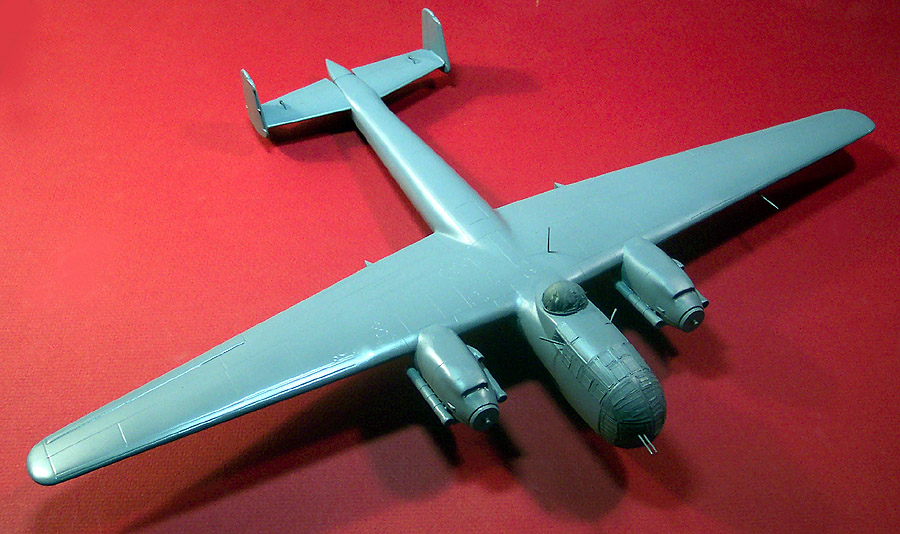
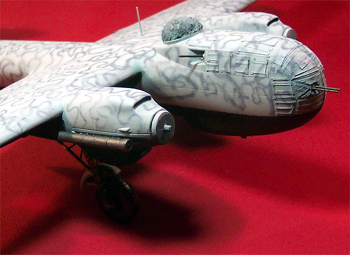
There were a few spots around the nose glazing that needed touching up with some putty and sand paper and one rough spot on a wing tip was buffed. The panel lines crossing the joint of the new to old wing panel had been filled and missed before but here I caught it and rescribed them. I played around with the various paint combinations until I settled on using RLM-76 for the upper base color with RLM-75 as my squiggle color. First I need to paint the underside with some Testors Flat Black. This was allowed to dry overnight and then the lower side was masked off. From here I had two days involved in putting the RLM-76 on the model. I gave it a good coat and let it dry overnight then applied yet another coat after checking all my masks just to be certain none had lifted. This was allowed to dry yet another night and then I was ready to do the squiggle. I thinned my RLM-75 down a little more than normal and reduced my air pressure to about 8PSI and started in the middle of one wing. About an hour and a half later I had finished the squiggle � what a job that was and I seem to have some issues getting my eyeballs to focus now.
Off come the lower side masks. Paint did creep under the masks in a few small spots and these were easily touched up with a brush. I painted the exhaust shrouds with Gunze Burnt Iron along with the exposed gun barrels around the cockpit. The main landing gear assemblies were glued in place and I�m ready to take a break for the evening.
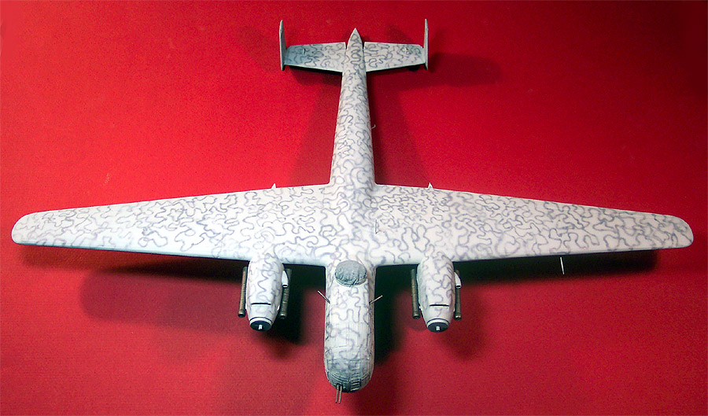
Before I installed the clear nose side panels I had cut out the lower crew access hatch. Using the pieces that were cut out along with some thin stock strips of styrene I built a new crew hatch. To this I added ladder supports from styrene rod and built a ladder from heavy magnet (fuse) wire and super-glue. Some grab handles were made from fine magnet wire and the piece was painted to match the rest of the aircraft.
The model got two good coats of Future Floor Polish and was allowed to cure for twenty-four hours before the decals were applied. The top surface panel lines were accented with a basic sludge wash. The panel lines on the underside were accented with a sludge wash made from Payne�s Gray and Titanium White. On the Fritz-X bomb and on the belly of the aircraft are dimples for the heater hoses. I drilled these out and inserted small lengths of brown wire when installing the bomb. Landing gear doors were placed and the various aerials were installed using .004 invisible threads drawn across a permanent black magic marker. Little dabs of superglue were used to create insulators and these were painted white.
After receiving a good coat of Polly Scale Clear Flat and drying down the masks are ready to come off. Where it took a full day to place the masks, it took about an hour to remove them. All tissue packing was removed and the lower crew door was installed. The lower gondola machine gun was installed at this time also. Medium magnet wire was used to make the door retention cables. A circular mask was placed on top of the cabin and the area was painted steel for the radar receiver. The Koster kit comes with a paper cutout for this part, which really is not very appropriate. I found a good quality decal for it in my spares box but it was 1/72. I scanned this, upsized it 150% and printed a new decal. After this was placed it got several heavy coats of Future to simulate a glass cover. The little photo etched gun sights were bent to the correct shape and installed on the guns.
The upper gun turret had the final pieces assembled and it was then glued in place. The propellers were assembled and painted RLM-70 Black Green. After they had dried the hubs were done with RLM-73 Dark Green. Once all the paint had dried on these they were simply pressed into the previously drilled holes. I think it�s time to take some pictures now.
The diorama base is from my article on Basic Diorama Building, the work table and ladder are from the ICM Russian Aces Yak-7 kit, the Schwimmwagen is from a Bandai kit and the figures came from various Verlinden, Preiser and Monogram packages. I used a Kodak 430 digital camera and lighting was provided from a series of clamp-on trouble lights with GE Reveal light bulbs in them.
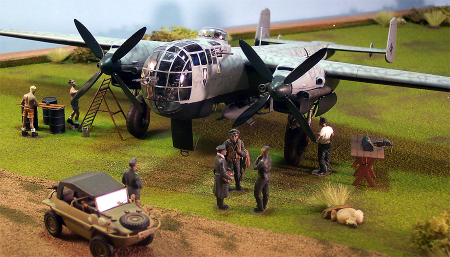
All of the following pictures are linked so you can click on them to view larger images.
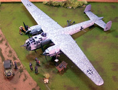
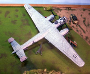
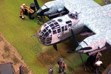
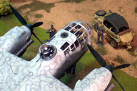
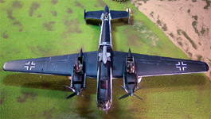
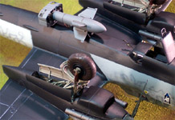
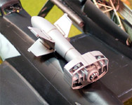
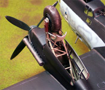
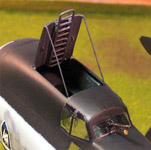
In reviewing the pictures I find two minor errors that I�ll have to go back and fix. I forgot to remove the masking tape from the landing light in the wing and there should be a red lightning bolt on the unit badge. Both minor and I apologize for these not being in the final shot.
As I sit here contemplating the models I have completed it suddenly occurs to me that my best, most enjoyable builds are all from or connected to Bill Koster and Koster Aero Enterprises. If you have not built one of his kits or conversions I strongly recommend that you look into acquiring one, you�ll not regret it.


{kind=link}
{kind=link}
{kind=link}
{kind=link}
{kind=link}
{kind=link}
{kind=link}
{kind=link}
{kind=link}